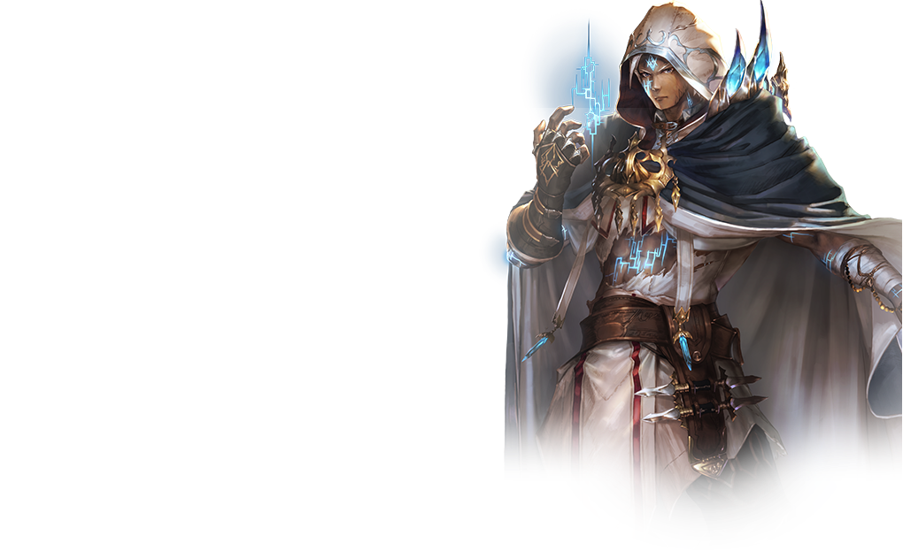

精灵 (エルフ, Elf/Forestcraft)
守护森林的精灵亚里莎与众多妖精们一同战斗。
妖精是消耗为1、攻击力和体力皆为1的随从卡牌。
开局时, 使用附带将“妖精”加入手牌效果的卡牌来积攒手牌。
中盘过后, 使用累积的妖精来发动其他卡牌的强力组合, 一鼓作气扭转战局。
皇家护卫 (ロイヤル, Royal/Swordcraft)
侍奉皇家的女仆艾莉卡的职业是率领王国军的皇家护卫。
皇家护卫的专用卡牌类型分为士兵及指挥官。
此职业擅长通过召唤大量的士兵卡牌和使用强化士兵的指挥官, 在随从的战斗中占据优势的战术。
巫师 (ウィッチ, Witch/Runecraft)
巫师伊莎贝尔使用法术进行战斗。使用法术发动魔力增幅来减少手牌的费用与强化手牌效果, 以此来连续发动強大能力的卡牌。
开局时发动召唤随从的法术或使用对随从造成伤害的法术, 积累手牌的魔力增幅效果。
魔力增幅卡牌效果累积起来后, 可随心所欲地破坏对方随从或抽取卡牌。
龙族 (ドラゴン, Dragon/Dragoncraft)
龙族的罗文隐藏着惊人的力量, 擅长使用高PP(能量点)召唤巨大的随从。
在开局时使用增加PP最大值的卡牌, 让自己能比对方使用更多的PP。
中盘过后连续召唤高PP的强大的龙, 掌控战局。
死灵法师 (ネクロマンサー, Necromancer/Shadowcraft)
能听到死者声音的露娜是死灵法师。
开局时, 使用附带增加墓地数量效果的卡牌, 和通过随从之间的积极对战积累墓地数量。
中盘过后, 通过消耗墓地数量发动唤灵能力, 占据有利形势获取胜利
吸血鬼 (ヴァンパイア, Vampire/Bloodcraft)
血族尤里亚斯擅长操控自身体力的战术。
通过牺牲体力获得強力效果, 或吸取对方体力来控制战斗走向。
当自身体力减至10或以下时将发动复仇能力, 强化各种卡牌。
主教 (ビショップ, Bishop/Havencraft)
主教伊莉丝具有预言未来的能力。
使用等待数回合即可召唤強力随从的吟唱类护符, 在对战中盘过后压制对方是此职业的基本战术。
开局时, 一边使用在对手回合中会得到强化的随从承受对方攻击, 一边设置吟唱类魔法阵为中盘过后的战局做准备。

复仇者 (ネメシス, Nemesis/Portalcraft)
复仇者伊昂是拥有超越次元之力的战士。
复仇者的特色是可使用造物类型的卡牌 (并非可组编的卡牌，而是在战斗中通过能力产生的卡牌)。
合理运用将造物卡牌加入牌组与手牌的能力，以使用强力的附属卡牌来战斗。